Componentes internos
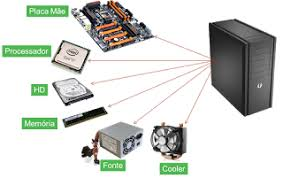Os componentes internos são as peças físicas essenciais que se conectam para permitir o funcionamento de um computador, sendo os principais a Placa Mãe (que interliga tudo), o Processador (CPU) (o cérebro do sistema), a Memória RAM (para dados temporários), o Disco Rígido ou SSD (para armazenamento permanente), a Placa de Vídeo (para gráficos) e a Fonte de Alimentação (que fornece energia).
2CPU
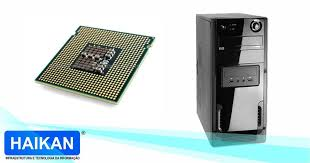A CPU (Unidade Central de Processamento) é o "cérebro" de um computador, um componente de hardware responsável por executar instruções, processar dados e realizar cálculos, sendo essencial para o funcionamento de qualquer sistema computacional. Ela é composta por uma unidade de controle (que gerencia o fluxo de instruções), uma unidade lógica e aritmética (ULA), que executa os cálculos, e registradores (para armazenar dados temporariamente).
3Armazenamento
Armazenamento é o ato ou processo de guardar informações, dados ou objetos para uso ou consumo futuro, e pode ser físico, como em discos rígidos ou fitas, ou digital, como em serviços de nuvem. Em computadores, o armazenamento é o componente que guarda permanentemente programas e ficheiros, sendo distinto da memória RAM, que armazena dados temporariamente durante a execução de programas.
4Memória
Memória é a capacidade mental de adquirir, reter e recuperar informações e experiências, sendo fundamental para a aprendizagem e o conhecimento do mundo. Esse processo ocorre através de redes de neurónios espalhadas pelo cérebro e envolve codificação, armazenamento e recuperação da informação. Existem diferentes tipos de memória, como a de curto prazo (para informações temporárias) e a de longo prazo (para informações permanentes).
5Fonte de alimentação
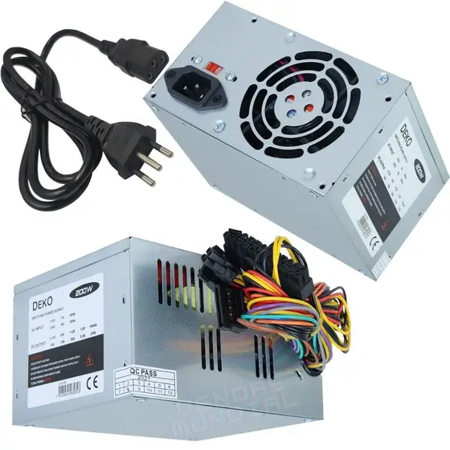Uma fonte de alimentação é um dispositivo eletrônico que converte a energia elétrica da rede para uma forma utilizável por um equipamento, convertendo a corrente alternada (CA) em corrente contínua (CC) e regulando-a para garantir uma tensão estável. Ela protege os aparelhos contra flutuações e picos de energia, assegurando o funcionamento seguro e eficiente dos circuitos eletrônicos e elétricos.
Componentes externos
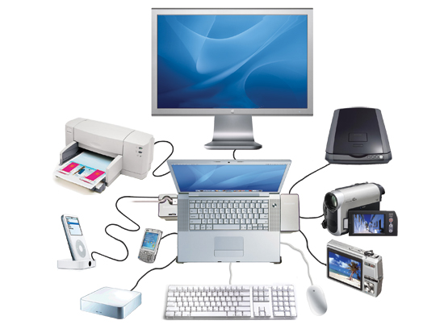Componentes externos, ou hardware externo, são os dispositivos periféricos que se conectam a um computador ou outro sistema eletrônico, permitindo a interação do usuário com a máquina e expandindo suas funcionalidades. Exemplos comuns incluem o monitor, o teclado, o rato, a impressora e as caixas de som, que são ligados ao gabinete através de portas como a USB ou Thunderbolt™. 7
Teclado
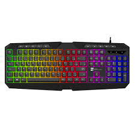Um teclado é um dispositivo de entrada usado para digitar caracteres, números e símbolos num computador ou noutro dispositivo eletrônico, ou um instrumento musical com teclas que produzem sons quando pressionadas. Como periférico de computador, é essencial para a entrada de dados e comandos, e pode ser físico (com teclas táteis) ou virtual (num ecrã).
8Monitor de vídeo
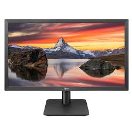Monitor de vídeo é um dispositivo eletrônico de saída que exibe informações visuais, como imagens e vídeos, em uma tela, recebendo sinais de uma fonte de vídeo, como um computador, câmera ou console de jogos. Ele funciona como uma interface entre o usuário e a fonte de dados, mostrando o processamento em um formato visual compreensível.
9Mouse
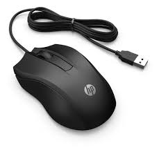Um mouse, ou rato, é um dispositivo de entrada de dados que permite interagir com um computador, movendo o cursor na tela e realizando ações através de botões e uma roda de rolagem. Ele é considerado um periférico, recebendo comandos do usuário e transmitindo-os para o sistema, e pode ser com ou sem fio, usando conexões como USB ou Bluetooth.
10Impressora

Uma impressora é um dispositivo eletrônico que transforma documentos digitais em cópias físicas, utilizando diferentes tecnologias e métodos de impressão. Elas são essenciais em ambientes de trabalho, escolas e residências, permitindo a produção de documentos, fotos e outros materiais impressos.
11Plotter
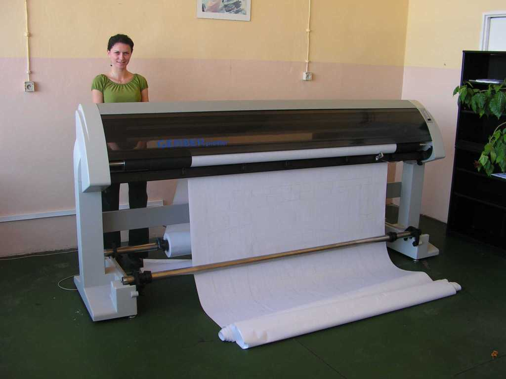Um plotter é um periférico de computador, uma impressora de grande formato que produz desenhos técnicos, mapas, projetos de arquitetura e outras imagens de alta precisão e em larga escala, usando canetas, tintas ou um sistema de corte para desenhar ou cortar linhas contínuas e gráficos vetoriais em papel ou outros materiais.
12Scanner
Um scanner (ou digitalizador) é um dispositivo eletrônico que converte documentos, imagens ou objetos físicos em formato digital, permitindo que sejam visualizados, editados e armazenados num computador. Funciona através da leitura óptica de um ficheiro, como um documento de papel, e a sua transmissão para o computador sob a forma de um arquivo digital. Este processo é semelhante ao de uma fotocopiadora, mas com a diferença de criar um arquivo digital em vez de uma cópia impressa.
13Gabinete
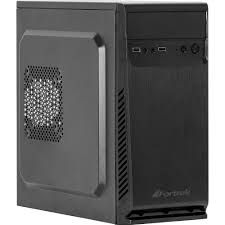Um "gabinete" tem diversos significados, podendo ser uma sala ou departamento de trabalho (como o gabinete de um político), um móvel para guardar objetos (como o de uma cozinha ou para a manutenção de equipamentos) ou o compartimento que abriga os componentes de um computador.
14Web Cam
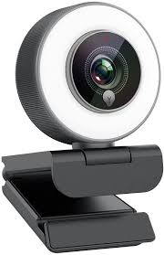Uma webcam é uma pequena câmara digital que capta vídeo e áudio em tempo real para serem transmitidos por internet ou armazenados num computador. É um dispositivo de entrada de vídeo muito popular, amplamente usado para videoconferências (como Zoom e Google Meet), transmissões ao vivo, chamadas pessoais, gravações e até como câmara de segurança.
15Caixas de som
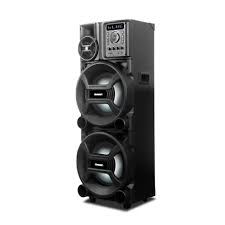Uma caixa de som é um dispositivo eletrônico que converte sinais elétricos em ondas sonoras audíveis. A parte interna, conhecida como alto-falante, utiliza ímãs, uma bobina e um cone para criar vibrações que empurram o ar e produzem o som que escutamos
16Microfone
Um microfone é um aparelho eletrônico que converte ondas sonoras em um sinal elétrico, atuando como um transdutor. Ele utiliza o movimento de um diafragma (uma membrana fina) causado pela pressão do som para gerar um sinal elétrico, que pode então ser gravado, transmitido ou processado por outros dispositivos. Os microfones são usados numa variedade de aplicações, desde gravação e amplificação de voz e instrumentos até telefonia e transmissão de áudio.
17Head Set
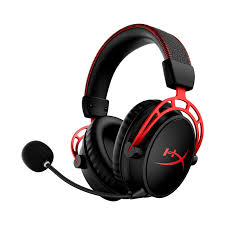O headset é um modelo de fone de ouvido mais robusto que acompanha, ainda, um microfone (fixo, destacável, móvel ou retrátil). Ele pode ser usado por profissionais que precisam falar ao telefone enquanto digitam, por exemplo, mas é especialmente utilizado pelos gamers.
Interfaces de entrada e saída
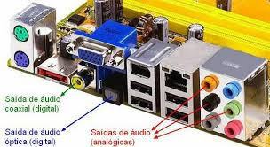Uma interface de entrada e saída (E/S) é um ponto de ligação num computador ou dispositivo eletrônico que permite a transferência de dados entre o dispositivo e outros periféricos, funcionando como um canal de comunicação que permite o fluxo de informação para dentro e para fora. Ela facilita a interação entre o utilizador/mundo exterior e a unidade central de processamento (CPU), convertendo sinais e adaptando-os ao formato adequado para que a comunicação ocorra.
19Interfaces sem fios
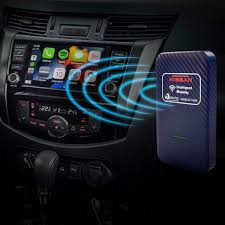Uma interface sem fio é um componente eletrônico que permite a comunicação entre dispositivos sem a necessidade de cabos físicos, utilizando tecnologias como Wi-Fi, Bluetooth ou RFID para transmitir dados através de ondas eletromagnéticas. Essa tecnologia confere mobilidade e flexibilidade, viabilizando o acesso à internet e a outras redes para dispositivos como smartphones, tablets e laptops.
20Áudio
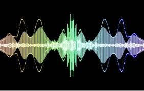Áudio é a representação de som, ou seja, a captação, transmissão e reprodução de sons, que pode ser em formato analógico ou digital, como uma gravação de música ou um sinal elétrico equivalente ao som. Essencialmente, o áudio transforma as ondas sonoras do mundo real num sinal que pode ser manipulado e reproduzido por equipamentos eletrônicos.
21Rede (Ethernet)
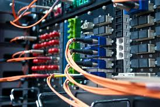Uma Rede Ethernet é uma tecnologia de rede local com fios (LAN) que usa cabos físicos, como os de par trançado com conector RJ-45, para conectar dispositivos como computadores, roteadores e impressoras, permitindo que compartilhem dados e acessem a internet. É conhecida pela sua estabilidade, velocidade e confiabilidade, sendo uma alternativa mais segura e com maior desempenho que as redes Wi-Fi.
22VGA
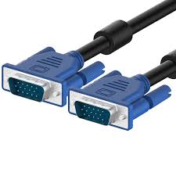VGA (Vídeo Graphics Array) é uma tecnologia de interface analógica, criada pela IBM em 1987, que utiliza um conector azul de 15 pinos para conectar computadores a monitores, televisores e projetores, transmitindo sinais de vídeo. Embora já seja considerada ultrapassada e substituída por padrões digitais como HDMI e DisplayPort, a VGA ainda é encontrada em equipamentos mais antigos e foi fundamental para a exibição de gráficos em computadores na época de seu lançamento.
23HDMI
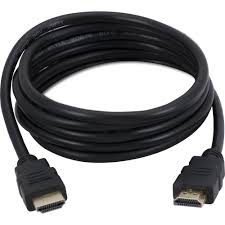HDMI significa "High-Definition Multimedia Interface" (Interface Multimídia de Alta Definição) e é um padrão de tecnologia digital para transmitir sinais de áudio e vídeo de alta qualidade entre dispositivos eletrônicos, como TVs, consolas de jogos, computadores e leitores de Blu-Ray. É um método moderno e digital que substituiu os antigos padrões analógicos, oferecendo uma experiência audiovisual mais fiel e sem perda de qualidade de sinal.
24USB 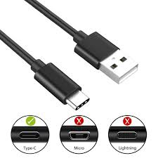
USB, que significa "Universal Serial Bus" (Barramento Serial Universal), é um padrão de tecnologia que permite a conexão e a comunicação de diversos dispositivos eletrônicos com computadores, incluindo a transferência de dados e a alimentação elétrica. Criado para simplificar o uso de periféricos como mouses, teclados, impressoras, e dispositivos de armazenamento externo, o USB foi lançado na década de 1990 e evoluiu em diversas gerações e tipos de conectores, como o USB-A, USB-B e o mais moderno USB-C.